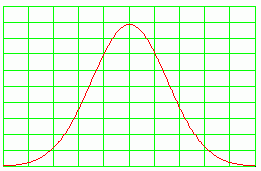

|
Quantum Potential Weapons December, 2004
The first weapons were actually longitudinal EM wave interferometers, which I originally christened "scalar" EM weapons. Several nations now have those, and the French government almost certainly developed that kind of weapons after the demise of the Priore project. Some physicists in the French government must have realized that plasmas - such as were being used in the Priore tube - could also transduce input transverse EM waves into longitudinal EM waves. So they started with that, and would have logically progressed to the LW interferometry. The KGB did not get its QP weapons developed and deployed until the beginning of 1990, although a lab QP prototype hurriedly put together is almost certainly what was tested against the U.S. air attack on Libya in 1986. So the other nations, other than those three mentioned, have longitudinal EM wave interferometers. The QP weapons have been highly reserved by the Russians. However, the complete extent of their capabilities is still being figured out. The Gulf War Disease was induced by such a weapon, and one can explain why U.S., Canada, and British troops got the disease, while the French troops did not. Also why the natives did not get it. One can also explain the "weird" stuff, as to how sperm was able to carry the condition into a Gulf War Veteran's wife, how a child might in some cases get it just by being in the close vicinity, hugged, etc., after awhile, etc. These mechanisms do not appear in the normal disease repertoire of U.S. medical science. Presently one of the purposes for which the QP weapons are employed by the KGB, is to "spread" the immune systems of the population in a targeted area (nation). This is done by using a "cocktail" mix of spacetime curvature sets ("engines) for several (perhaps a dozen) different kinds of diseases, and inserting those engines "infolded inside" the quantum potential. The trick is to keep the effects engendered in the targeted bodies so low that they are in the "shadow" state (i.e., in the virtual state but just below "observable" state where physical symptoms would emerge). The immune system is controlled by what Fritz Albert Popp ("Photon Storage in Biological Systems," 1979) loosely refers to as a sort of "master cellular control system" in the body, and that master system is electrodynamic in nature, using longitudinal EM waves. The cellular control system does react to the presence of those "disease engines in the shadow state", by having the immune system initiate a "spreading" of its limited resources and adaptations in advance preparations for the dozen diseases. This "thins" the immune resources available for any single disease. Note that the white cell count, etc. can still be okay in total, but only a fraction of them will be available to respond to a new pathogen that enters the body suddenly. So when terrorist BW (biological warfare) strikes are launched, the immune systems are "caught" in "spread" control condition, so that much more limited immune resources can be made available to fight that specific disease. Hence the casualty rate of the BW attack is increased, perhaps by fivefold. That's at least one thing that it seems the Russian QP weapons are being using for right now.
 The "signature" of that use is very subtle. A population forms a bell-shaped distribution curve, including in its degree of response to low level disease states. So in adjusting for the "shadow state" level, a few of the populace will already be sufficiently weak that the ADDITIONAL disease state - added to what they already have in their own "shadow state" disease precursors, adds and the total integrates (increases) over the observable threshold, so that disease breaks out in those persons. So a few persons will break out with each disease being used in the "spreading" signals. Here is the signature: A normal disease outbreak is usually vectorial. It emerges in a certain place, and spreads from there.
However, the outbreak for one disease, in those few "over
the threshold"
disease cases from the "immune system spreading", is
DISTRIBUTED throughout
the target population. In other words, these few cases pop
up spontaneously
here and there, widely scattered, and not in any
"spreading" vector pattern
as is normal.
The quantum potential weaponry (possessed by only three nations) is supreme, because it uses multiply connected spacetime, and DOES NOT involve propagation of EM energy through space as does the longitudinal EM wave interferometers. The multiply connected spacetime effect used by a quantum potential weapon can be explained thus: Take a point on a plane. Add another point on top of it. Add ten thousand more. They all "superpose" spatially. Seems to be only a single point sitting there. It's a thousand, and it's also one. Forget Aristotelian logic; it does not apply to multiply connected spacetime, where A and not-A (in our normal 3-space) are different and separated, but in the multiply connected space A and not-A are superposed and "identically the same" as far as responding to physical changes and effects. Now suppose you had access to ONE of those points in that superposed huge number, in your own peculiar space. Suppose you added a megawatt into that point. Simultaneously, a megawatt would appear in each and every other point, in the other 10 thousand and one, since they all "share the same space". Your one megawatt input can actually do the work of 10,002 megawatts of power! Now imagine that, in your space, those points are widely separated - but they are also connected by a quantum potential - which means that in a peculiar (multiply connected) space they are all superposed. This could be all the human bodies in a targeted national area (or even larger). Now you have a single body in your lab (say, in Russia) which is also "connected in" to that quantum potential. (Actually you can also connect a machine; it does not have to be a body). Then you suddenly strike that lab station or object with, say, a very powerful laser, so that the struck object "fries". And suppose its QP connection is with 220 million Americans. Instantly, at precisely the same moment, 220 million Americans also fry. In the weapons world practically, it appears that one does not achieve a "perfect" QP connection, but achieves a certain "degree" of multiple space connection. So suppose that gives a "constant of QP connectivity" of about 0.01. Then you hit the object in the lab with 1 megawatt. Every American gets hit with 10,000 watts. Each one just fries slower. It's also a little more complicated than that. Apparently each body varies (chemistry, morphology, whatever) and also there is a distribution of how well the bodies connect, say a distribution about that 0.01. So some Americans actually get 1,000 watts, some 10,000 watts, and a few get 15,000 watts, e.g. From the limited but evolving information available, this appears to be the way it probably works in real life. Anyway, this is the kind of thing that is the basis for the deterrence the little nation holds over the KGB/Russians. Unless the Russians find a way around the counterfire from the "friendly little nation," if they strike strategically, then Russia disappears from the face of the earth, effectively. Anyway, the other stuff being shot down, targeted, etc. is by longitudinal EM wave interferometers (this is what I originally referred to as "scalar EM weapons"). Turns out that a scalar potential is made of a harmonic set of bidirectional longitudinal EM wave pairs (Whittaker, 1903) and so where Whittaker 1904 (which initiated superpotential theory) shows that any EM field or wave pattern can be decomposed into two scalar potential functions, those two scalar potential functions can be further decomposed into their constituent longitudinal EM waves and the dynamics imposed upon them. Going backwards, you build longitudinal waves in a sort of desired fixed assembly, then interfere two beams of them at a distance, and voila! The reverse function (compared to superpotential theory) yields EM fields and waves arising from every point in space in that distant interference zone (IZ). You can make those arising EM fields divergent (heating) (entropic) or convergent (cooling) (negentropic). You can use "peak power pulsing" to produce a giant EM burst in the distant IZ. That can either be a burst of "cold" or a burst of "heat", as you wish. The April 1984 initial burst off the Kurils, e.g., was a cold explosion. After the development of the induced cloud pattern arising and spreading, a test of a different mode of the weapon (globular shell, with intense EM energy in the shell) was initiated from the top of the cloud. That shell then spread slowly to gigantic size. A good description is provided in two articles in the journal Science. So it is more accurate to use the term "longitudinal EM wave interferometry", instead of scalar EM interferometry. Mixed Signals May Have Misguided U.S. Weapons; Pentagon
Probing Electronic Interference Also Suspected in F111 Crash
During Libya Strike |